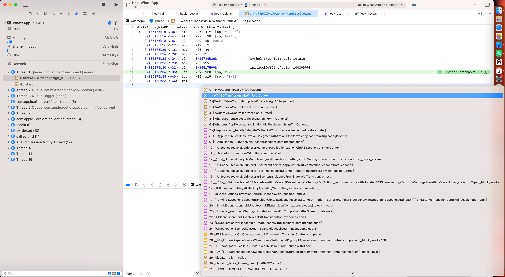
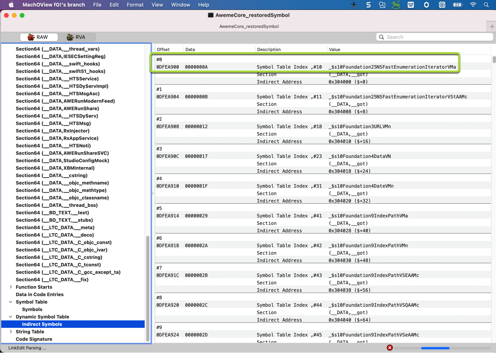
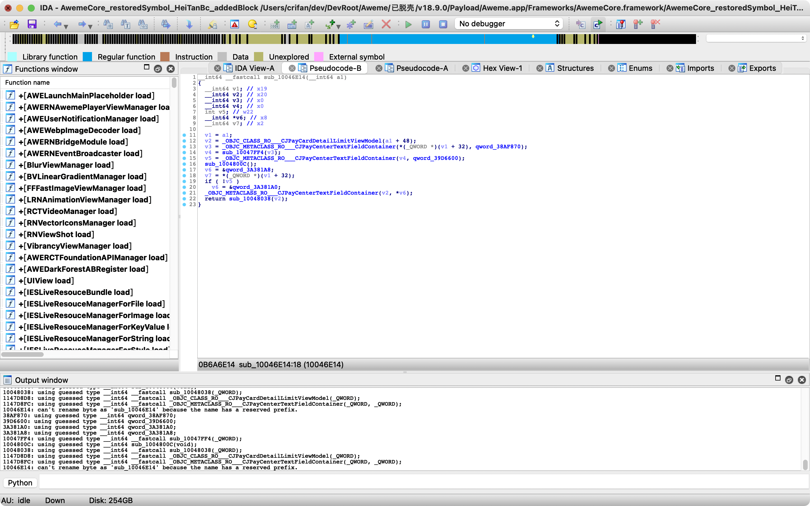

恢复符号表前后对比
恢复符号表之前
- 效果
- Xcode调试iOS程序 -》 查看函数调用堆栈 -》只能看到无名函数或错误的函数名 -》 无法看到期望的（ObjC等）函数名
- Xcode给iOS的ObjC函数加断点 -》 通过（ObjC的）函数名加断点，加不上
- Xcode调试iOS程序 -》 查看函数调用堆栈 -》只能看到无名函数或错误的函数名 -》 无法看到期望的（ObjC等）函数名


恢复符号表之后
- 效果
- Xcode调试iOS程序 -》 查看函数调用堆栈 -》就能看到函数名了
- 
- Xcode给iOS的ObjC函数加断点 -》断点就能加上了
- 举例
- WhatsApp
-[WARootViewController updateOfflineAssignABProperties]
- WhatsApp
- 举例
- Xcode调试iOS程序 -》 查看函数调用堆栈 -》就能看到函数名了

用工具辅助验证
且可以用其他工具辅助验证：的确加上了函数名=符号表了：
- MachOView
Dynamic Symbol Table->Indirect Symbols- 之前=没有恢复符号表：
AwemeCore_noSymbol、AwemeCore_restoredSymbol- 
- 之后=已恢复符号表：
AwemeCore_restoredSymbol_HeiTanBc
- 之前=没有恢复符号表：
- IDA
- 之后=已恢复符号表：
AwemeCore_restoredSymbol_HeiTanBc- 
- 之后=已恢复符号表：
- (Xcode中)lldb